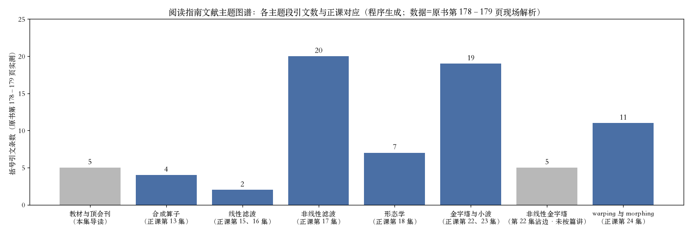
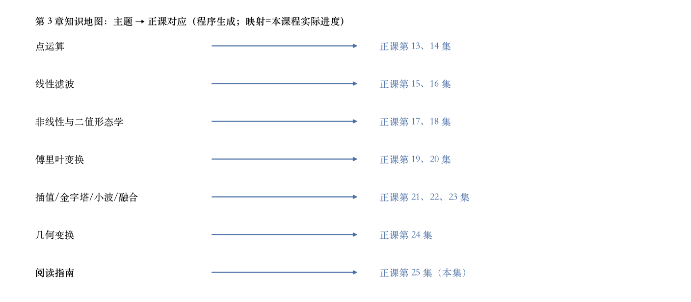

书上第 178 页 · 章末阅读指南
章末阅读指南：书单和主题
第 3 章末尾有一节补充阅读。
书单列了五本流行教材。
顶会顶刊是 IEEE ICIP 和 TIP。
这一节没有新公式、新图。
依据：原书第 178 页
教材五本
Gomes–Velho 1997、Jähne 1997
Pratt 2007、Burger–Burge 2009
Gonzalez–Woods 2017
顶会刊：IEEE ICIP、IEEE TIP
正课第二十五集
01 / 5
书上第 178–179 页 · 引文图谱
八段主题，七十三条引文
八段主题，共 73 条引文。
去重后 72 个不同条目。
年份从 1982 跨到 2017。
蓝六段对正课，灰两段例外。
依据：原书第 178–179 页 + 本集实验

八段主题的引文条数：柱顶为条数，灰段是导读与非线性金字塔｜程序生成，未用教材或论文原图
正课第二十五集
02 / 5
书上第 178–179 页 · 上四段
上四段：合成、线性、非线性、形态学
合成 4 条：Porter–Duff 1984 开山。
线性 2 条：Freeman–Adelson 1991。
非线性 20 条：双边 5、迭代 8、变分 4、引导 3。
形态学 7 条：Serra 1982 等。
依据：原书第 178–179 页 + 本集实验
条数与正课
合成 4 条 → 第 13 集
线性 2 条 → 第 15、16 集
非线性 20 条 → 第 17 集
形态学 7 条 → 第 18 集
正课第二十五集
03 / 5
书上第 179 页 · 下三段
下三段：金字塔、非线性金字塔、变形
金字塔与小波 19 条：Burt–Adelson 1983、Mallat 1989。
非线性金字塔 5 条：视觉 2、计算摄影 3。
这 5 条未按篇讲，Fattal 2009 思路带过。
变形与 morphing 11 条：Beier–Neely 1992。
依据：原书第 179 页 + 本集实验
条数
金字塔与小波 19 条 → 第 22、23 集
非线性金字塔 5 条 → 第 22 集沾边
warping 与 morphing 11 条 → 第 24 集
正课第二十五集
04 / 5
书上第 3 章 · 主题对应
正文七个主题，一共十三集
上四段八集：点运算、线性、非线性与形态学、傅里叶。
下三段：插值/金字塔/小波三集，几何变换一集。
加本集导读，共十三集。
用法：回看、查书单、做习题。
依据：原书第 178–180 页 + 本集实验

七个主题到正课的对应：末行是本集导读｜程序生成，未用教材或论文原图
正课第二十五集
05 / 5